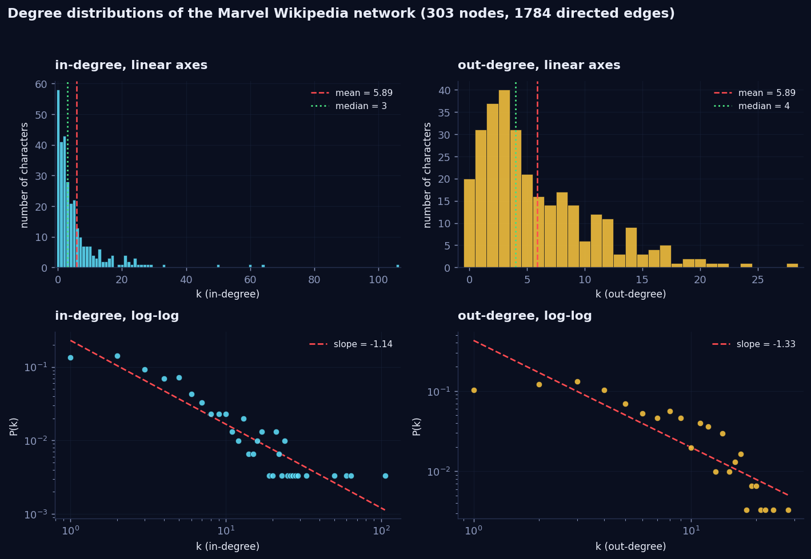
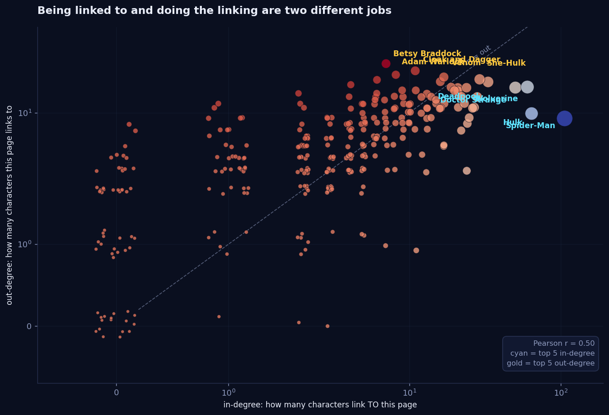
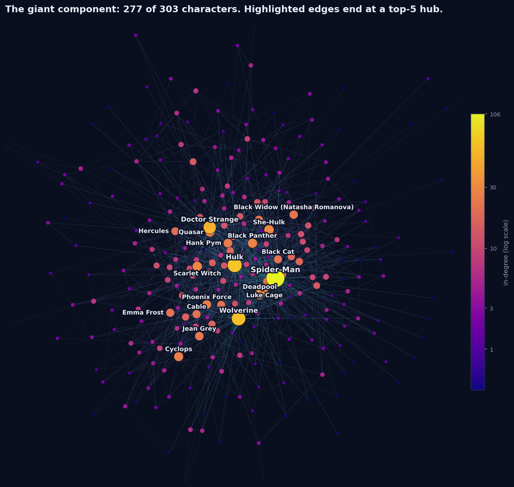
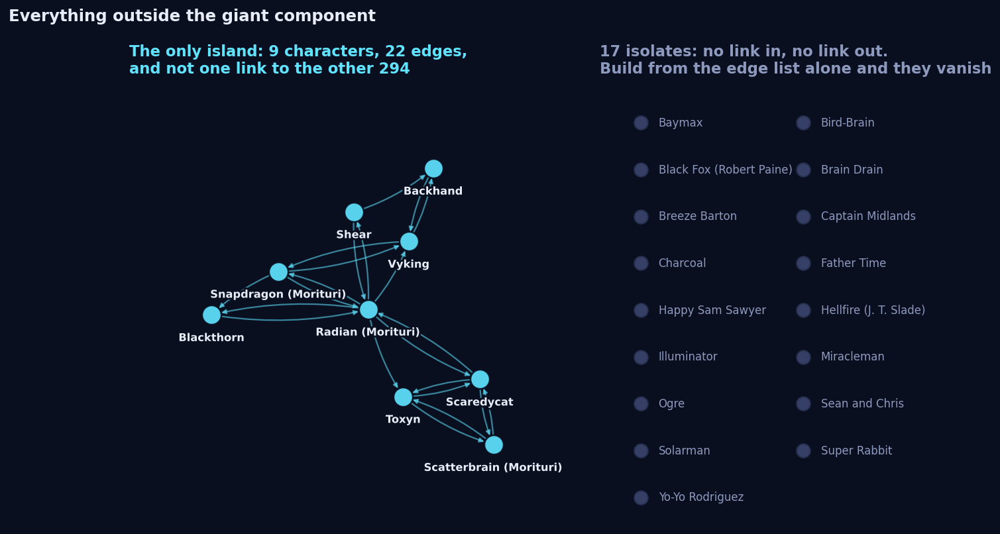
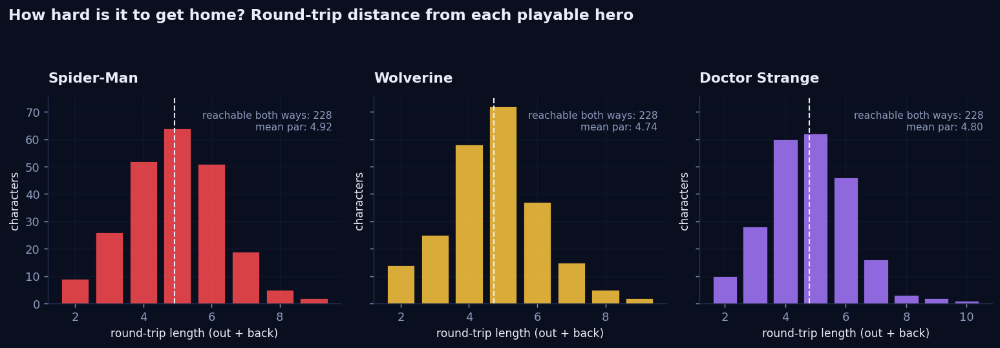

Everybody links to Spider-Man.
Spider-Man links to almost nobody.
One in three Marvel characters on Wikipedia links to Spider-Man's page. He links back to nine of them. That asymmetry turned out to be the whole story of this week: in-degree and out-degree measure two completely different jobs, and once you see it you cannot unsee it. So we built a game where you have to feel it.
What we asked
Three questions, in the order they occurred to us:
- Who is famous, and who is curious? In-degree says how many other characters point at you. Out-degree says how many you point at. Are these the same people?
- What does the network look like if you have to walk it? Not the god's-eye picture, but the view of somebody standing on one article with only its outgoing links to choose from.
- What is out there in the dark? The course notes warn that 17 characters have no link in either direction. We wanted to know whether anything else lives outside the main body.
The data, and the 17 characters that vanish if you are careless
We used the frozen week-1 release exactly as handed out. The one thing that matters when loading it is the order of operations. The edge list only mentions characters that have at least one link, so building the graph from it alone gives you 286 nodes and quietly loses the rest.
G = nx.DiGraph()
for row in read_tsv("week1_nodes.tsv"): # all 303 nodes FIRST
G.add_node(row["node_id"], **row)
for row in read_tsv("week1_edges.tsv"): # then the 1784 edges
G.add_edge(row["source"], row["target"])week1_edges.tsv is written as a
# comment. If you strip comments before parsing, as you should, you also strip the header, and
csv.DictReader then silently treats the first real edge as column names. You lose one edge and get a
KeyError later. We pass the field names in explicitly.
| Property | Value | Comment |
|---|---|---|
| Nodes | 303 | Every character in the category |
| Directed edges | 1784 | Article A links to article B |
| Density | 0.0195 | About 2 percent of possible links exist |
| Mean degree | 5.89 | Identical for in and out, by construction |
| Median in-degree | 3 | The typical character is not famous |
| Median out-degree | 4 | The typical character does link out |
| Reciprocity | 0.392 | Only 39 percent of links are answered |
| Nodes with no outgoing link | 20 | Dead ends when you walk the graph |
| Nodes with no incoming link | 58 | Unreachable by clicking |
| Isolates | 17 | No link in either direction |
Degree distributions
The required plot, and it earns its place. Read the top row first: in-degree on the left runs out to 106, while out-degree on the right stops dead at 28. Same mean of 5.89, completely different shapes.

The asymmetry has a mundane cause, and that is what makes it interesting. Out-degree is bounded by how much somebody bothered to write. An editor writing the Venom article mentions maybe twenty other characters, because that is how long an article is. In-degree is bounded by nothing: every one of the other 302 articles can independently decide to mention Spider-Man, and 106 of them did.
Out-degree measures effort spent on one page. In-degree measures attention paid by everybody else. One is capped by an author's stamina, the other by nothing at all.
In versus out: two different jobs
Plotting them against each other makes the two populations visible. Correlation is real but weak, Pearson r = 0.50, and the interesting characters are the ones far off the diagonal.

| # | Most linked to | in | out | Most linking out | out | in |
|---|---|---|---|---|---|---|
| 1 | Spider-Man | 106 | 9 | Betsy Braddock | 28 | 7 |
| 2 | Hulk | 64 | 10 | Cloak and Dagger | 24 | 11 |
| 3 | Wolverine | 60 | 17 | Adam Warlock | 22 | 8 |
| 4 | Doctor Strange | 50 | 17 | Venom | 21 | 17 |
| 5 | Deadpool | 33 | 19 | She-Hulk | 20 | 29 |
Not one name appears in both top fives. The heavily linked-to characters are the ones with decades of publication history that every later character has to be positioned against. The heavy linkers are pages that are structurally about other characters: Betsy Braddock has swapped identities, bodies and codenames often enough that her article is mostly a map of other people, and Cloak and Dagger is one article covering two characters and their whole shared supporting cast.
Drawing the network
277 of the 303 characters sit in one connected blob. Node size and colour are in-degree, and we brightened the edges that terminate at a top-five hub, which is what makes the star patterns visible rather than merely implied.

Direction changes the picture completely. Ignore it and you get one component of 277. Respect it and the graph breaks into 66 strongly connected components, the largest holding 229 characters. Those 229 are the part of the universe you can actually wander around in and return from. Inside it the average shortest path is 3.36 hops and the diameter is 10.
What is out there in the dark
This is where we found the thing we did not expect. The 17 isolates are documented in the course notes, so we went looking for what else sits outside the giant component. The answer is: exactly one island, and it has a story.

The island is Backhand, Blackthorn, Radian, Scaredycat, Scatterbrain, Shear, Snapdragon, Toxyn and Vyking. They are the cast of Strikeforce: Morituri, a 1986 Marvel series set in its own future where the characters were written to die. They reference each other constantly and nothing else references them, because the series was deliberately sealed off from the main continuity. The link graph reproduces that editorial decision perfectly, forty years later, without knowing anything about comics.
The isolates are a different phenomenon. Baymax, Miracleman, Super Rabbit, Father Time, Yo-Yo Rodriguez and the rest are mostly characters who arrived through an acquisition, a film, or a one-off wartime title. They are in the category because a Wikipedia editor tagged them, but no other character's article has any reason to mention them. Being in a category and being in a universe are not the same thing.
So we turned it into a game
All of the above is the god's-eye view. We wanted the other one: what the network feels like from inside, with only the outgoing links of the page you are standing on. So we built WEB-CRAWLER.
WEB-CRAWLER
Play as Spider-Man, Wolverine or Doctor Strange. You get a target somewhere out in the network, and you click your way there and back along real Wikipedia links, one page at a time. The map is dark until you walk on it. Your score is compared against the shortest route that actually exists, computed with BFS on the same 1784 edges.
Open it full screenThe game is not decoration. Three of the numbers above are things you can only really feel by playing:
- Direction hurts. Reciprocity is 0.392, so the majority of the links you take cannot be walked back. Overshoot and you do not reverse, you go around.
- Dead ends are real. 20 characters have no outgoing link at all. Land on one and the panel is empty. That is not a bug, that is the graph.
- Hubs are the whole strategy. Because in-degree is so concentrated, the winning move is almost always to get to a hub and let its incoming traffic carry you. The top ten characters absorb 25 percent of all 1784 edges.

The mean round trip is 4.92 hops for Spider-Man, 4.74 for Wolverine and 4.80 for Doctor Strange. Spider-Man being the hardest of the three surprised us until we looked again at his out-degree: being the most linked-to character in the network helps you get home, but it does nothing at all for getting out. He has nine doors.
Stretch: does the snapshot still match Wikipedia?
The snapshot's edges were harvested from raw wiki source, where internal links are written [[Page name]].
We re-derived twelve characters ourselves through the API, resolved redirects in a batched query so that
[[Peter Parker]] and [[Spider-Man]] do not count as different targets, and diffed the
result against the frozen edge list.
python scripts/verify_wikipedia.py --n 12
character snap live both drift
Betsy_Braddock 28 28 28
Cloak_and_Dagger_(characters) 24 24 24
Adam_Warlock 22 22 22
Venom_(character) 21 20 20 only in snapshot: Silk_(character)
She-Hulk 20 20 20
U.S._Agent 20 20 20
Darkdevil 4 4 4
Doctor_Druid 4 4 4
Gremlin_(comics) 4 4 4
Guardian_(Marvel_Comics) 4 4 4
Baymax 0 0 0
Bird-Brain_(Marvel_Comics) 0 0 0
TOTAL 151 150 150
agreement (Jaccard over all sampled edges): 0.993150 of 151 edges reproduced independently. The single disagreement is real: the Venom article linked to Silk when the snapshot was taken on 26 August and does not any more. That is not an error in the snapshot, it is the reason the course froze one in the first place. Wikipedia moved underneath us in under a week.
403 unless your request carries a
User-Agent header identifying your client, and you have to resolve redirects or roughly a tenth of
every page's links look like disagreements when they are the same article under another name.
What surprised us
- The out-degree ceiling. We expected both distributions to be heavy-tailed and only one is. In-degree measures the world's attention; out-degree measures one author's word count.
- Zero overlap in the top fives. Not a single character is both heavily linked to and a heavy linker. We assumed the hubs would do both.
- Morituri. That the only island outside the giant component is exactly one 1986 series whose whole premise was being sealed off from continuity. The link structure recovered a forty-year-old editorial decision on its own.
- Spider-Man is the hardest hero to play. Easiest to come home to, hardest to leave.
Reproduce it
Everything here is one repository, three scripts and no notebook state to guess at.
git clone https://github.com/Oddvar112/Social-Graphs-and-Interactions
cd Social-Graphs-and-Interactions
python scripts/build_graph.py # snapshot -> data/marvel_week1.js for the game
python scripts/analyse.py # every figure and number in this post
python scripts/verify_wikipedia.py # the live Wikipedia check above
python -m http.server 8000 # then open http://localhost:8000Every number quoted in this post is also written to data/stats.json by analyse.py, so
you can check any of them against the source rather than taking our word for it.